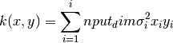
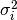
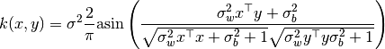
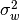
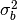
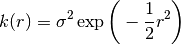
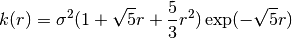
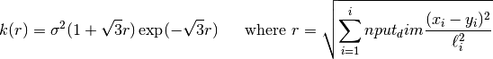
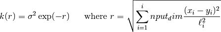
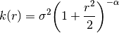

GPy.kern._src package¶
Subpackages¶
- GPy.kern._src.psi_comp package
- Submodules
- GPy.kern._src.psi_comp.linear_psi_comp module
- GPy.kern._src.psi_comp.rbf_psi_comp module
- GPy.kern._src.psi_comp.rbf_psi_gpucomp module
- GPy.kern._src.psi_comp.sslinear_psi_comp module
- GPy.kern._src.psi_comp.ssrbf_psi_comp module
- GPy.kern._src.psi_comp.ssrbf_psi_gpucomp module
- Module contents
Submodules¶
GPy.kern._src.ODE_UY module¶
-
class
GPy.kern._src.ODE_UY.ODE_UY(input_dim, variance_U=3.0, variance_Y=1.0, lengthscale_U=1.0, lengthscale_Y=1.0, active_dims=None, name='ode_uy')[source]¶ Bases:
GPy.kern._src.kern.Kern
GPy.kern._src.ODE_UYC module¶
-
class
GPy.kern._src.ODE_UYC.ODE_UYC(input_dim, variance_U=3.0, variance_Y=1.0, lengthscale_U=1.0, lengthscale_Y=1.0, ubias=1.0, active_dims=None, name='ode_uyc')[source]¶ Bases:
GPy.kern._src.kern.Kern
GPy.kern._src.ODE_st module¶
-
class
GPy.kern._src.ODE_st.ODE_st(input_dim, a=1.0, b=1.0, c=1.0, variance_Yx=3.0, variance_Yt=1.5, lengthscale_Yx=1.5, lengthscale_Yt=1.5, active_dims=None, name='ode_st')[source]¶ Bases:
GPy.kern._src.kern.Kernkernel resultiong from a first order ODE with OU driving GP
Parameters: - input_dim (int) – the number of input dimension, has to be equal to one
- varianceU (float) – variance of the driving GP
- lengthscaleU (float) – lengthscale of the driving GP (sqrt(3)/lengthscaleU)
- varianceY (float) – ‘variance’ of the transfer function
- lengthscaleY (float) – ‘lengthscale’ of the transfer function (1/lengthscaleY)
Return type: kernel object
GPy.kern._src.ODE_t module¶
-
class
GPy.kern._src.ODE_t.ODE_t(input_dim, a=1.0, c=1.0, variance_Yt=3.0, lengthscale_Yt=1.5, ubias=1.0, active_dims=None, name='ode_st')[source]¶ Bases:
GPy.kern._src.kern.Kern
GPy.kern._src.add module¶
-
class
GPy.kern._src.add.Add(subkerns, name='add')[source]¶ Bases:
GPy.kern._src.kern.CombinationKernelAdd given list of kernels together. propagates gradients through.
This kernel will take over the active dims of it’s subkernels passed in.
-
K(X, X2=None, *a, **kw)[source]¶ Add all kernels together. If a list of parts (of this kernel!) which_parts is given, only the parts of the list are taken to compute the covariance.
-
gradients_X(dL_dK, X, X2=None)[source]¶ Compute the gradient of the objective function with respect to X.
Parameters: - dL_dK (np.ndarray (num_samples x num_inducing)) – An array of gradients of the objective function with respect to the covariance function.
- X (np.ndarray (num_samples x input_dim)) – Observed data inputs
- X2 (np.ndarray (num_inducing x input_dim)) – Observed data inputs (optional, defaults to X)
-
GPy.kern._src.brownian module¶
-
class
GPy.kern._src.brownian.Brownian(input_dim=1, variance=1.0, active_dims=None, name='Brownian')[source]¶ Bases:
GPy.kern._src.kern.KernBrownian motion in 1D only.
Negative times are treated as a separate (backwards!) Brownian motion.
Parameters: - input_dim (int) – the number of input dimensions
- variance (float) –
GPy.kern._src.coregionalize module¶
-
class
GPy.kern._src.coregionalize.Coregionalize(input_dim, output_dim, rank=1, W=None, kappa=None, active_dims=None, name='coregion')[source]¶ Bases:
GPy.kern._src.kern.KernCovariance function for intrinsic/linear coregionalization models
This covariance has the form: .. math:
\mathbf{B} = \mathbf{W}\mathbf{W}^ op + ext{diag}(kappa)An intrinsic/linear coregionalization covariance function of the form: .. math:
k_2(x, y)=\mathbf{B} k(x, y)it is obtained as the tensor product between a covariance function k(x, y) and B.
Parameters: - output_dim (int) – number of outputs to coregionalize
- rank (int) – number of columns of the W matrix (this parameter is ignored if parameter W is not None)
- W (numpy array of dimensionality (num_outpus, W_columns)) – a low rank matrix that determines the correlations between the different outputs, together with kappa it forms the coregionalization matrix B
- kappa (numpy array of dimensionality (output_dim, )) – a vector which allows the outputs to behave independently
GPy.kern._src.hierarchical module¶
GPy.kern._src.independent_outputs module¶
-
class
GPy.kern._src.independent_outputs.Hierarchical(kernels, name='hierarchy')[source]¶ Bases:
GPy.kern._src.kern.CombinationKernelA kernel which can represent a simple hierarchical model.
See Hensman et al 2013, “Hierarchical Bayesian modelling of gene expression time series across irregularly sampled replicates and clusters” http://www.biomedcentral.com/1471-2105/14/252
To construct this kernel, you must pass a list of kernels. the first kernel will be assumed to be the ‘base’ kernel, and will be computed everywhere. For every additional kernel, we assume another layer in the hierachy, with a corresponding column of the input matrix which indexes which function the data are in at that level.
For more, see the ipython notebook documentation on Hierarchical covariances.
-
class
GPy.kern._src.independent_outputs.IndependentOutputs(kernels, index_dim=-1, name='independ')[source]¶ Bases:
GPy.kern._src.kern.CombinationKernelA kernel which can represent several independent functions. this kernel ‘switches off’ parts of the matrix where the output indexes are different.
The index of the functions is given by the last column in the input X the rest of the columns of X are passed to the underlying kernel for computation (in blocks).
Parameters: kernels – either a kernel, or list of kernels to work with. If it is a list of kernels the indices in the index_dim, index the kernels you gave!
-
GPy.kern._src.independent_outputs.index_to_slices(index)[source]¶ take a numpy array of integers (index) and return a nested list of slices such that the slices describe the start, stop points for each integer in the index.
e.g. >>> index = np.asarray([0,0,0,1,1,1,2,2,2]) returns >>> [[slice(0,3,None)],[slice(3,6,None)],[slice(6,9,None)]]
or, a more complicated example >>> index = np.asarray([0,0,1,1,0,2,2,2,1,1]) returns >>> [[slice(0,2,None),slice(4,5,None)],[slice(2,4,None),slice(8,10,None)],[slice(5,8,None)]]
GPy.kern._src.kern module¶
-
class
GPy.kern._src.kern.CombinationKernel(kernels, name, extra_dims=[])[source]¶ Bases:
GPy.kern._src.kern.KernAbstract super class for combination kernels. A combination kernel combines (a list of) kernels and works on those. Examples are the HierarchicalKernel or Add and Prod kernels.
-
input_sensitivity(summarize=True)[source]¶ If summize is true, we want to get the summerized view of the sensitivities, otherwise put everything into an array with shape (#kernels, input_dim) in the order of appearance of the kernels in the parameterized object.
-
parts¶
-
-
class
GPy.kern._src.kern.Kern(input_dim, active_dims, name, useGPU=False, *a, **kw)[source]¶ Bases:
GPy.core.parameterization.parameterized.Parameterized-
K(X, X2=None, *a, **kw)[source]¶ Compute the kernel function.
Parameters: - X – the first set of inputs to the kernel
- X2 – (optional) the second set of arguments to the kernel. If X2 is None, this is passed throgh to the ‘part’ object, which handLes this as X2 == X.
-
add(other, name='add')[source]¶ Add another kernel to this one.
Parameters: other (GPy.kern) – the other kernel to be added
-
gradients_Z_expectations(dL_dpsi0, dL_dpsi1, dL_dpsi2, Z, variational_posterior)[source]¶ Returns the derivative of the objective wrt Z, using the chain rule through the expectation variables.
-
gradients_qX_expectations(dL_dpsi0, dL_dpsi1, dL_dpsi2, Z, variational_posterior)[source]¶ Compute the gradients wrt the parameters of the variational distruibution q(X), chain-ruling via the expectations of the kernel
-
input_sensitivity(summarize=True)[source]¶ Returns the sensitivity for each dimension of this kernel.
-
plot(x=None, fignum=None, ax=None, title=None, plot_limits=None, resolution=None, **mpl_kwargs)[source]¶ plot this kernel. :param x: the value to use for the other kernel argument (kernels are a function of two variables!) :param fignum: figure number of the plot :param ax: matplotlib axis to plot on :param title: the matplotlib title :param plot_limits: the range over which to plot the kernel :resolution: the resolution of the lines used in plotting :mpl_kwargs avalid keyword arguments to pass through to matplotlib (e.g. lw=7)
-
plot_ARD(*args, **kw)[source]¶ See
kernel_plots
-
prod(other, name='mul')[source]¶ Multiply two kernels (either on the same space, or on the tensor product of the input space).
Parameters: - other (GPy.kern) – the other kernel to be added
- tensor (bool) – whether or not to use the tensor space (default is false).
-
return_psi2_n¶ Flag whether to pass back psi2 as NxMxM or MxM, by summing out N.
-
update_gradients_diag(dL_dKdiag, X)[source]¶ update the gradients of all parameters when using only the diagonal elements of the covariance matrix
-
update_gradients_expectations(dL_dpsi0, dL_dpsi1, dL_dpsi2, Z, variational_posterior)[source]¶ Set the gradients of all parameters when doing inference with uncertain inputs, using expectations of the kernel.
The esential maths is
- dL_d{theta_i} = dL_dpsi0 * dpsi0_d{theta_i} +
- dL_dpsi1 * dpsi1_d{theta_i} + dL_dpsi2 * dpsi2_d{theta_i}
-
GPy.kern._src.kernel_slice_operations module¶
Created on 11 Mar 2014
@author: maxz
-
class
GPy.kern._src.kernel_slice_operations.KernCallsViaSlicerMeta[source]¶ Bases:
GPy.core.parameterization.parameterized.ParametersChangedMeta
GPy.kern._src.linear module¶
-
class
GPy.kern._src.linear.Linear(input_dim, variances=None, ARD=False, active_dims=None, name='linear')[source]¶ Bases:
GPy.kern._src.kern.KernLinear kernel

Parameters: - input_dim (int) – the number of input dimensions
- variances (array or list of the appropriate size (or float if there is only one variance parameter)) – the vector of variances 
- ARD (Boolean) – Auto Relevance Determination. If False, the kernel has only one variance parameter sigma^2, otherwise there is one variance parameter per dimension.
Return type: kernel object
-
class
GPy.kern._src.linear.LinearFull(input_dim, rank, W=None, kappa=None, active_dims=None, name='linear_full')[source]¶ Bases:
GPy.kern._src.kern.Kern
GPy.kern._src.mlp module¶
-
class
GPy.kern._src.mlp.MLP(input_dim, variance=1.0, weight_variance=1.0, bias_variance=100.0, active_dims=None, name='mlp')[source]¶ Bases:
GPy.kern._src.kern.KernMulti layer perceptron kernel (also known as arc sine kernel or neural network kernel)

Parameters: - input_dim (int) – the number of input dimensions
- variance (float) – the variance

- weight_variance (array or list of the appropriate size (or float if there is only one weight variance parameter)) – the vector of the variances of the prior over input weights in the neural network 
- bias_variance – the variance of the prior over bias parameters 
- ARD (Boolean) – Auto Relevance Determination. If equal to “False”, the kernel is isotropic (ie. one weight variance parameter sigma^2_w), otherwise there is one weight variance parameter per dimension.
Return type: Kernpart object
GPy.kern._src.periodic module¶
-
class
GPy.kern._src.periodic.Periodic(input_dim, variance, lengthscale, period, n_freq, lower, upper, active_dims, name)[source]¶ Bases:
GPy.kern._src.kern.Kern
-
class
GPy.kern._src.periodic.PeriodicExponential(input_dim=1, variance=1.0, lengthscale=1.0, period=6.283185307179586, n_freq=10, lower=0.0, upper=12.566370614359172, active_dims=None, name='periodic_exponential')[source]¶ Bases:
GPy.kern._src.periodic.PeriodicKernel of the periodic subspace (up to a given frequency) of a exponential (Matern 1/2) RKHS.
Only defined for input_dim=1.
-
class
GPy.kern._src.periodic.PeriodicMatern32(input_dim=1, variance=1.0, lengthscale=1.0, period=6.283185307179586, n_freq=10, lower=0.0, upper=12.566370614359172, active_dims=None, name='periodic_Matern32')[source]¶ Bases:
GPy.kern._src.periodic.PeriodicKernel of the periodic subspace (up to a given frequency) of a Matern 3/2 RKHS. Only defined for input_dim=1.
Parameters: - input_dim (int) – the number of input dimensions
- variance (float) – the variance of the Matern kernel
- lengthscale (np.ndarray of size (input_dim,)) – the lengthscale of the Matern kernel
- period (float) – the period
- n_freq (int) – the number of frequencies considered for the periodic subspace
Return type: kernel object
-
class
GPy.kern._src.periodic.PeriodicMatern52(input_dim=1, variance=1.0, lengthscale=1.0, period=6.283185307179586, n_freq=10, lower=0.0, upper=12.566370614359172, active_dims=None, name='periodic_Matern52')[source]¶ Bases:
GPy.kern._src.periodic.PeriodicKernel of the periodic subspace (up to a given frequency) of a Matern 5/2 RKHS. Only defined for input_dim=1.
Parameters: - input_dim (int) – the number of input dimensions
- variance (float) – the variance of the Matern kernel
- lengthscale (np.ndarray of size (input_dim,)) – the lengthscale of the Matern kernel
- period (float) – the period
- n_freq (int) – the number of frequencies considered for the periodic subspace
Return type: kernel object
GPy.kern._src.poly module¶
-
class
GPy.kern._src.poly.Poly(input_dim, variance=1.0, order=3.0, active_dims=None, name='poly')[source]¶ Bases:
GPy.kern._src.kern.KernPolynomial kernel
GPy.kern._src.prod module¶
-
class
GPy.kern._src.prod.Prod(kernels, name='mul')[source]¶ Bases:
GPy.kern._src.kern.CombinationKernelComputes the product of 2 kernels
Parameters: - k2 (k1,) – the kernels to multiply
- tensor (Boolean) – The kernels are either multiply as functions defined on the same input space (default) or on the product of the input spaces
Return type: kernel object
GPy.kern._src.rbf module¶
-
class
GPy.kern._src.rbf.RBF(input_dim, variance=1.0, lengthscale=None, ARD=False, active_dims=None, name='rbf', useGPU=False)[source]¶ Bases:
GPy.kern._src.stationary.StationaryRadial Basis Function kernel, aka squared-exponential, exponentiated quadratic or Gaussian kernel:

GPy.kern._src.splitKern module¶
A new kernel
-
class
GPy.kern._src.splitKern.DiffGenomeKern(kernel, idx_p, Xp, index_dim=-1, name='DiffGenomeKern')[source]¶ Bases:
GPy.kern._src.kern.Kern
GPy.kern._src.static module¶
-
class
GPy.kern._src.static.Bias(input_dim, variance=1.0, active_dims=None, name='bias')[source]¶ Bases:
GPy.kern._src.static.Static
-
class
GPy.kern._src.static.Fixed(input_dim, covariance_matrix, variance=1.0, active_dims=None, name='fixed')[source]¶ Bases:
GPy.kern._src.static.Static
-
class
GPy.kern._src.static.Static(input_dim, variance, active_dims, name)[source]¶ Bases:
GPy.kern._src.kern.Kern
-
class
GPy.kern._src.static.White(input_dim, variance=1.0, active_dims=None, name='white')[source]¶ Bases:
GPy.kern._src.static.Static
GPy.kern._src.stationary module¶
-
class
GPy.kern._src.stationary.Cosine(input_dim, variance=1.0, lengthscale=None, ARD=False, active_dims=None, name='Cosine')[source]¶
-
class
GPy.kern._src.stationary.ExpQuad(input_dim, variance=1.0, lengthscale=None, ARD=False, active_dims=None, name='ExpQuad')[source]¶ Bases:
GPy.kern._src.stationary.StationaryThe Exponentiated quadratic covariance function.

- notes::
- Yes, this is exactly the same as the RBF covariance function, but the RBF implementation also has some features for doing variational kernels (the psi-statistics).
-
class
GPy.kern._src.stationary.Exponential(input_dim, variance=1.0, lengthscale=None, ARD=False, active_dims=None, name='Exponential')[source]¶
-
class
GPy.kern._src.stationary.Matern32(input_dim, variance=1.0, lengthscale=None, ARD=False, active_dims=None, name='Mat32')[source]¶ Bases:
GPy.kern._src.stationary.StationaryMatern 3/2 kernel:

-
Gram_matrix(F, F1, F2, lower, upper)[source]¶ Return the Gram matrix of the vector of functions F with respect to the RKHS norm. The use of this function is limited to input_dim=1.
Parameters: - F (np.array) – vector of functions
- F1 (np.array) – vector of derivatives of F
- F2 (np.array) – vector of second derivatives of F
- lower,upper (floats) – boundaries of the input domain
-
-
class
GPy.kern._src.stationary.Matern52(input_dim, variance=1.0, lengthscale=None, ARD=False, active_dims=None, name='Mat52')[source]¶ Bases:
GPy.kern._src.stationary.StationaryMatern 5/2 kernel:
-
Gram_matrix(F, F1, F2, F3, lower, upper)[source]¶ Return the Gram matrix of the vector of functions F with respect to the RKHS norm. The use of this function is limited to input_dim=1.
Parameters: - F (np.array) – vector of functions
- F1 (np.array) – vector of derivatives of F
- F2 (np.array) – vector of second derivatives of F
- F3 (np.array) – vector of third derivatives of F
- lower,upper (floats) – boundaries of the input domain
-
-
class
GPy.kern._src.stationary.OU(input_dim, variance=1.0, lengthscale=None, ARD=False, active_dims=None, name='OU')[source]¶ Bases:
GPy.kern._src.stationary.StationaryOU kernel:

-
class
GPy.kern._src.stationary.RatQuad(input_dim, variance=1.0, lengthscale=None, power=2.0, ARD=False, active_dims=None, name='RatQuad')[source]¶ Bases:
GPy.kern._src.stationary.StationaryRational Quadratic Kernel

-
class
GPy.kern._src.stationary.Stationary(input_dim, variance, lengthscale, ARD, active_dims, name, useGPU=False)[source]¶ Bases:
GPy.kern._src.kern.KernStationary kernels (covariance functions).
Stationary covariance fucntion depend only on r, where r is defined as
r = sqrt{ sum_{q=1}^Q (x_q - x’_q)^2 }The covariance function k(x, x’ can then be written k(r).
In this implementation, r is scaled by the lengthscales parameter(s):
r = sqrt{ sum_{q=1}^Qrac{(x_q - x’_q)^2}{ell_q^2} }.
By default, there’s only one lengthscale: seaprate lengthscales for each dimension can be enables by setting ARD=True.
To implement a stationary covariance function using this class, one need only define the covariance function k(r), and it derivative.
... def K_of_r(self, r):
return foo- def dK_dr(self, r):
- return bar
The lengthscale(s) and variance parameters are added to the structure automatically.
-
K(X, X2=None, *a, **kw)[source]¶ Kernel function applied on inputs X and X2. In the stationary case there is an inner function depending on the distances from X to X2, called r.
K(X, X2) = K_of_r((X-X2)**2)
-
dK_dr_via_X= <functools.partial object>¶
-
gradients_X(dL_dK, X, X2=None)[source]¶ Given the derivative of the objective wrt K (dL_dK), compute the derivative wrt X
-
update_gradients_diag(dL_dKdiag, X)[source]¶ Given the derivative of the objective with respect to the diagonal of the covariance matrix, compute the derivative wrt the parameters of this kernel and stor in the <parameter>.gradient field.
See also update_gradients_full
GPy.kern._src.symbolic module¶
GPy.kern._src.trunclinear module¶
-
class
GPy.kern._src.trunclinear.TruncLinear(input_dim, variances=None, delta=None, ARD=False, active_dims=None, name='linear')[source]¶ Bases:
GPy.kern._src.kern.KernTruncated Linear kernel
Parameters: - input_dim (int) – the number of input dimensions
- variances (array or list of the appropriate size (or float if there is only one variance parameter)) – the vector of variances
- ARD (Boolean) – Auto Relevance Determination. If False, the kernel has only one variance parameter sigma^2, otherwise there is one variance parameter per dimension.
Return type: kernel object
-
class
GPy.kern._src.trunclinear.TruncLinear_inf(input_dim, interval, variances=None, ARD=False, active_dims=None, name='linear')[source]¶ Bases:
GPy.kern._src.kern.KernTruncated Linear kernel
Parameters: - input_dim (int) – the number of input dimensions
- variances (array or list of the appropriate size (or float if there is only one variance parameter)) – the vector of variances
- ARD (Boolean) – Auto Relevance Determination. If False, the kernel has only one variance parameter sigma^2, otherwise there is one variance parameter per dimension.
Return type: kernel object